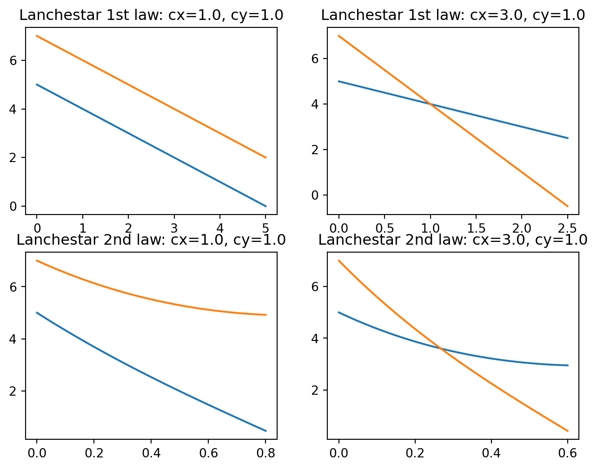

# %%
from scipy.integrate import solve_ivp
import numpy as np
import matplotlib.pyplot as plt
# %% function
def ode_Lan1(t, z, cx, cy):
dx = -cy # Y軍の武器の性能
dy = -cx # X軍の武器の性能
return [dx, dy]
def ode_Lan2(t, z, cx, cy):
dx = -cy * z[1]
dy = -cx * z[0]
return [dx, dy]
def Lanchestar_func(x0=5.0, y0=7.0, cx=1.0, cy=1.0, tend=5.0, law=1):
if law == 1:
sol = solve_ivp(
ode_Lan1,
t_span=[0, tend], # 積分範囲。
y0=[x0, y0], # 初期値。
args=(cx, cy,), # solve_ivpにわたすパラメータ。
dense_output=True # なめらかな数値解を渡すための奴(深く考えるな)
)
tcl = np.linspace(0, tend, 100)
ycl = sol.sol(tcl)
return tcl, ycl
elif law == 2:
sol = solve_ivp(
ode_Lan2,
t_span=[0, tend], # 積分範囲。
y0=[x0, y0], # 初期値。
args=(cx, cy,), # solve_ivpにわたすパラメータ。
dense_output=True # なめらかな数値解を渡すための奴(深く考えるな)
)
tcl = np.linspace(0, tend, 100)
ycl = sol.sol(tcl)
return tcl, ycl
# %% calc
# 1st law
tcl_1, ycl_1 = Lanchestar_func(cx=1.0, cy=1.0, law=1, tend=5.0)
tcl_2, ycl_2 = Lanchestar_func(cx=3.0, cy=1.0, law=1, tend=2.5)
# 2nd law
tcl_3, ycl_3 = Lanchestar_func(tend=0.8, cx=1.0, cy=1.0, law=2)
tcl_4, ycl_4 = Lanchestar_func(tend=0.6, cx=3.0, cy=1.0, law=2)2章 戦略の微分方程式モデル
2.1 ランチェスターの法則
2.1.1. はじめに
第一次世界大戦中の1916年、F. W. Lanchesterは、対立する戦力の変化を、時間に対する一階の微分方程式モデルで表現した。ランチェスターの法則として知られ、実際の戦闘例によっても検証されていて、有効性が実証されている。
ビジネスにおいては、大手企業におけるセールス戦略の立案に貢献している。
また、関連して現代におけるOperation Researchの先駆けとも考えられるので、経営学やORの研究で「ランチェスター賞」が開かれている。
ランチェスターの法則は「多勢に無勢」とか「寡をもって衆を制す」につながる。
導出には矢田部が読める。
佐藤は書籍だが古いかもしれない。
Ogiwara and UsamiはPDFで読めたので、導出にはこれらを読むのが良さそう。
2.1.2 ランチェスターの第一法則
ランチェスターの第一法則は「一騎打ちの法則」友いわれる。
敵と味方が1人ずつ戦うので、チームワークや将軍の采配などがない。
つまり、集団の戦略的行動がない事を考える。
\(x\)と\(y\)はそれぞれX軍、Y軍の戦力数(人)で、\(c_x\)と\(c_y\)はX軍とY軍の持つ
武器の性能であると考える(兵器は対象外)。
武器の性能は「一人あたりが倒せる敵の人数の平均」を入れる。
つまり武器の性能の単位も「人」
方程式は以下。
\[\begin{equation} \left\{\, \begin{aligned} \frac{dx}{dt} = -c_y \\ \frac{dy}{dt} = -c_x \end{aligned} \right . \end{equation}\]
ただし、\(c_x, c_y > 0\)、\(x, y > 0\)、\(t \geq 0\)である。
方程式の解釈をすると、Y軍の武器の性能が大きいほど、X軍の戦力数は時間に応じて大幅に減っていく。
【解】
初期条件が \(x(0) = x_0\)、 \(y(0) = y_0\) として与えられるとき、
ランチェスターの第一法則の解は以下で与えられる。
\[\begin{equation} \begin{aligned} x(t) = x_0 + c_yt \\ y(t) = y_0 + c_xt \end{aligned} \end{equation}\]
【証明】 それぞれを\(t\)について積分する。
\[\begin{equation} \begin{aligned} x(t) = \int-c_y dt = -c_yt + C \\ x(0) = C = x_0だから \\ x(t) = -c_yt + x_0 \end{aligned} \end{equation}\]
2つ目の方程式についても同様である。
2.1.3 ランチェスターの第二法則
第二法則は「集中効果の法則」として知られる。
第一法則と異なり、集団とする部隊を単位に行動し、複数の的を同時に攻撃可能。
主要戦力を戦場の一点に集中させて戦況を有利に仕様という「集中効果」を狙うことを想定する。
方程式は以下。
\[\begin{equation} \left \{\, \begin{aligned} \frac{dx}{dt} = -c_y y \\ \frac{dy}{dt} = -c_x x \end{aligned} \right. \end{equation}\]
第一法則と比べると、X軍の戦力数の減り方は、Y軍の武器の性能×戦力数に比例する。
つまり、Y軍の武器の性能が大きいか、Y軍の戦力数が多いと、この減少幅は大きくなる。
逆に、Y軍の戦力数が多いことは、X軍からの攻撃による損耗が僅かであるということになる。
【解】初期条件は2.1.2と同様のとき
\[\begin{equation} \begin{aligned} x(t) = \frac{1}{2}\{(x_0 + \sqrt{R}y_0)\exp{(-\sqrt{c_xc_y}t)} + (x_0 - \sqrt{R}y_0)\exp{(-\sqrt{c_xc_y}t)}\} \\ y(t) = \frac{1}{2\sqrt{R}}\{(x_0 + \sqrt{R}y_0)\exp{(-\sqrt{c_xc_y}t)} + (x_0 - \sqrt{R}y_0)\exp{(-\sqrt{c_xc_y}t)}\}\\ \\ \end{aligned} \end{equation}\]
ただし、 \(R = \frac{c_y}{c_x}\)である。
【証明】 以下は矢田部を参照する。 第1式を\(t\)で微分して、第2式を代入する。
\[\begin{equation} \begin{aligned} &\frac{d^2x}{dt^2} = -c_y\frac{dy}{dt} \\ &\Rightarrow \frac{d^2x}{dt^2} = -c_y(-c_xx)\\ &\Rightarrow \frac{d^2x}{dt^2} = c_xc_yx \end{aligned} \end{equation}\]
どういうわけかわからないが、この方程式の一般解は以下で与えられる。
ただし、\(A,B\)は定数(後でちゃんと解く)
\[ x = A\exp{(\sqrt{c_xc_y}t)} + B\exp{(\sqrt{c_xc_y}t)} (A1) \]
初期条件について、\(x(0) = A + B = x_0\) (A2)
第1式に代入して
\[ A\sqrt{c_xc_y}\exp{(\sqrt{c_xc_y}t)} + B\sqrt{c_xc_y}\exp{(\sqrt{c_xc_y}t)} = -c_yy \]
初期条件を代入して
\[ A-B = -\sqrt{c_xc_y}y_0 \]
であり(A3)、これらを\(A、B\)について解くと
\[\begin{equation} \begin{aligned} &A = \frac{1}{2}(x_0 - \sqrt{\frac{c_y}{c_x}}y_0) \\ &B = \frac{1}{2}(x_0 + \sqrt{\frac{c_y}{c_x}}y_0) \end{aligned} \end{equation}\]
(A1)に代入すると、解の1つ目が得られる。
第2式を\(t\)で積分すると、\(C\)を定数として
\[ y=\int-c_x x + C \]
である。第1式を代入し、初期条件を考えると\(C=0\)であり、解の2つ目が得られる(らしい)。
【補足】戦場以外でランチェスターの法則を使う場合
マーケティングにおける自社ブランドのポジショニング戦略に応用されるらしい。
2.1.4 シミュレーション例
大本のコードを確認しながら実行してみる。
基本はここのコードコピペ。
メモ:特にscipyの挙動がよくわからない。
可視化する。オレンジはY軍、青がX軍。
# %% vizualize
fig, ax = plt.subplots(nrows=2, ncols=2, figsize=(8, 6))
ax[0, 0].set_title("Lanchestar 1st law: cx=1.0, cy=1.0")
ax[0, 0].plot(tcl_1, ycl_1[0].T)
ax[0, 0].plot(tcl_1, ycl_1[1].T)
ax[0, 1].set_title("Lanchestar 1st law: cx=3.0, cy=1.0")
ax[0, 1].plot(tcl_2, ycl_2[0].T)
ax[0, 1].plot(tcl_2, ycl_2[1].T)
ax[1, 0].set_title("Lanchestar 2nd law: cx=1.0, cy=1.0")
ax[1, 0].plot(tcl_3, ycl_3[0])
ax[1, 0].plot(tcl_3, ycl_3[1])
ax[1, 1].set_title("Lanchestar 2nd law: cx=3.0, cy=1.0")
ax[1, 1].plot(tcl_4, ycl_4[0])
ax[1, 1].plot(tcl_4, ycl_4[1])
plt.show()